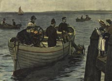

|
|

HARBOUR DIVING1832 - Deanes commence Marine Civil Engineering.
1858/9 - Westminster Bridge refurbishment. Divers spend up to 5 hours underwater.
1883 - Glasgow ship launch disaster.
1879 - 28th December: 4.15pm train from Edinburgh plunges into River Tay during storm. All 90 lives lost. Harry Watts and other divers spend 3 days looking for bodies. Locomotive No. 224 later recovered and returned to service. No bodies found. Harry refuses payment, having volunteered his services free.
WINCHESTER CATHEDRAL - ROB PALMER
On 25th January, 1905, John Colson, Cathedral Architect to the Dean and Chapter of Winchester Cathedral, warned, “Little or no attention has been paid to the really serious condition of some portions of the Fabric, which, if not somewhat immediately taken in hand may lead to disaster.” Unequal subsidence had led to the dislocation of the vaulting ribs, and cracks some 9-10 inches wide were appearing in the walls.
A hole was dug through 10 feet of top soil to a bed of chalky marl which was found to carry the foundations: a raft of beech trees placed horizontally in two layers, sometimes crosswise. A further 3 feet down the Marl was seen to rest on peat which was excavated to a firm water-charged gravel bed at 16-22 foot depth.
Tie rods and grouting were employed by Francis Fox, a Civil Engineer, to bind the walls together.
FRANCIS FOX (1844-1927)
He had worked on the construction of the London Underground system, but the underpinning would require more than a simple excavation.
Fox notes, “It was only after trying on my drawing board every possible device, that I was induced to call in the aid of a diver.”
A telegram to Siebe Gorman, brought their most experienced diver, William Walker, six feet tall and weighing 14 stone. His regular attendant, operating the vital air pump was William West. For almost six years, from April 1906 - September 1911, William Walker spent up to six hours a day in narrow waterlogged pits and drifts dug up to 24 feet under the Cathedral walls.
Once the workmen had dug a hole to the peat, Walker broke the surface and water gushed to a depth of 13 feet.
Fox himself visited the underwater excavations, “It was with a feeling of distinct loneliness that one crawled along the bottom in pitch-black darkness.”
Once the peat had been removed, small bags of concrete were laid by William Walker in four to eight courses, like brickwork. Once in position, each layer was split open - so it would bond with the next. On completion the water could safely be pumped out and ordinary workmen finished the course to the underside of the walls. Approximately 235 such excavations were carried out.
For the Thanksgiving Service on St. Swithun’s Day, 15th July 1912, King George V and the Queen were present and God was thanked for the successful completion of one of the greatest tasks a cathedral body has ever had to face.
WILLIAM ROBERT WALKER, MVO (1869-1918)
William Walker who had laid thousands of tons of concrete to support and save the Cathedral, felt it to be the proudest memory of his life.
He would live a further six years before succumbing to influenza, which had also struck his wife, and he died at the age of 49 shortly before the Armistice at the end of the 1st World War.
DIVERS FIGHTING/AT SEA - ROB PALMER
Some more impracticable ideas for divers include this underwater fight scene, depicted from the London play “The White Heather”
Première: DRURY LANE (16th September 1897)
Idea for: SEBASTOPOL, Crimean War (8th May 1855)
Charles Babbage proposed an even more fanciful idea of a submarine apparatus for the explosion of vessels.
The standard diver dress was ideally suited to a number of underwater applications. However the weight, bulk and cost of the equipment imposed certain limitations. Reg Vallintine examines the parallel progress of autonomous diving apparatus which would give the diver an additional midwater capability.
|
|